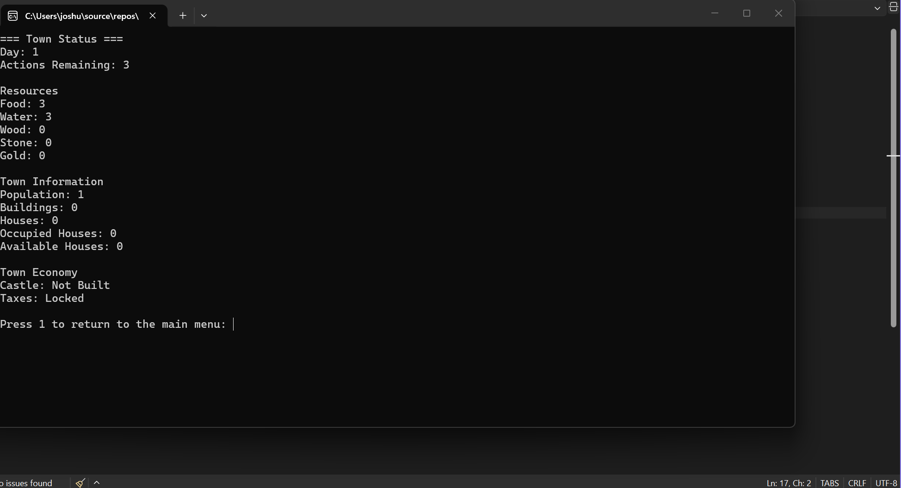

Languages
C++, HTML, CSS
Aspiring Game Developer
I am a Computer Programming for Game Development student focused on building my skills in C++, object-oriented programming, debugging, and software development. I enjoy creating interactive programs and turning ideas into working systems through programming.

About Me
I am studying Computer Programming for Game Development and developing my skills in C++ and software development. I enjoy creating programs with interactive systems, problem-solving, and gameplay mechanics. My goal is to continue improving my programming and game development skills while building larger and more advanced projects. I am currently focused on object-oriented programming, program organization, debugging, testing, and using version control throughout the development process.
C++, HTML, CSS
Visual Studio, Git, GitHub, GitHub Pages
Object-oriented programming, classes and objects, vectors, functions, input validation, exception handling, debugging, testing, branches, and pull requests
Featured Work
This project demonstrates the C++ programming, problem-solving, project organization, testing, and version control skills I developed during Project & Portfolio I.

C++ Console Application
Medieval Town Manager is a C++ console game where the player manages and develops a growing medieval town. The player gathers resources, recruits villagers, assigns jobs, constructs buildings, manages housing, and advances through a daily action system while responding to changing town conditions.
C++, Visual Studio, Git, GitHub, object-oriented programming, classes and objects, vectors, input validation, debugging, testing, branches, issues, milestones, and pull requests.
One of my biggest challenges was keeping the different gameplay systems working together as the project grew. Villager jobs, resource production, population consumption, buildings, random events, sickness, and town progression all affect other parts of the program. I addressed this by breaking development into smaller tasks, testing each system, and refactoring the program after the major features were working.
This project helped me improve how I organize larger programs. I moved menu, input, display, and game-loop responsibilities into a Game class while keeping town data and gameplay systems in the Town class. I also improved input validation by replacing repeated input-clearing code with a reusable function using stoi and try/catch. Throughout development, I used GitHub Issues, branches, commits, milestones, and pull requests to organize and track my work.